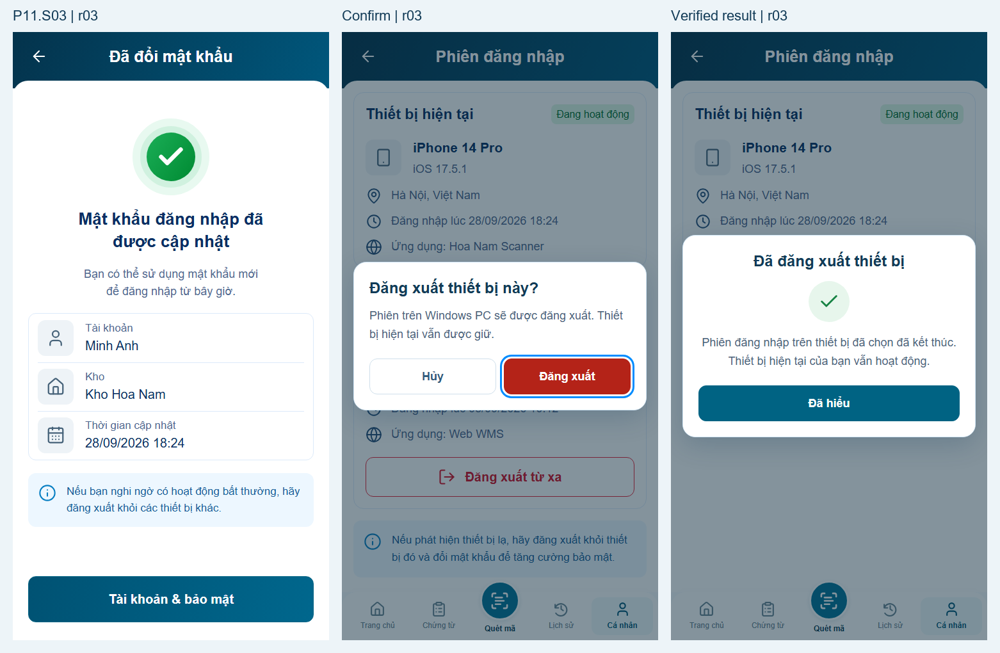

Màn kết quả đã cân để vừa khung, cuộn chuột không xê dịch bố cục ở sáu viewport. Đăng xuất từ xa: Hủy/Đăng xuất trước thao tác → xác minh → dialog Đã đăng xuất thiết bị/Đã hiểu. Không còn dòng thông báo chèn vào trang.
Contract HN-action-feedback-v1 đã khóa trong AGENTS.md và shared/UI_STANDARD.md, bắt buộc với các màn sau. Giữ 4 panel và logic preview P01–P11 r02; backend thật chưa tích hợp.
Mở preview · Báo cáo r03 · Bốn panel và baseline r02

Visual chờ nghiệm thu; 66 nhóm browser và 6 ca dialog-route PASS. Không tự kết luận pixel-perfect/production.